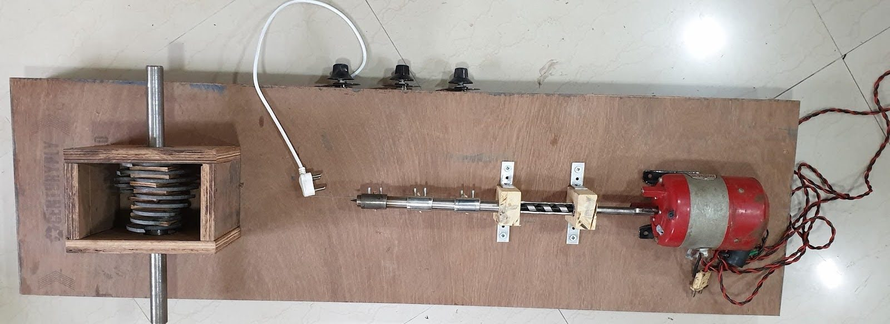

Problem Statement
3D printing produces failed prints and leftover plastic that often becomes waste. A small filament extruder can reduce material waste by turning plastic pellets or recycled plastic into filament, but the output diameter must remain consistent enough for reliable printing.
Approach
The extruder was designed around three constraints: stable melting temperature, smooth material feed, and controlled cooling. The system needed to heat plastic evenly, push it through a nozzle, and pull it at a repeatable speed to manage final filament diameter.
Solution

- Built the extrusion body, hopper, nozzle, and drive mechanism for plastic feedstock.
- Integrated heating elements and temperature sensing for controlled melting.
- Used motor speed control to tune the feed and pull rate.
- Iterated on cooling distance and winding behavior to improve filament consistency.
Challenges
The main challenge was filament diameter consistency. Temperature drift, inconsistent feedstock, and cooling rate changes all affected the output, so the prototype required repeated tuning across heater settings and pull speeds.